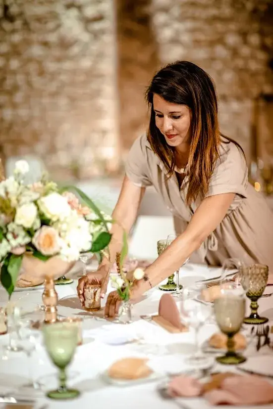
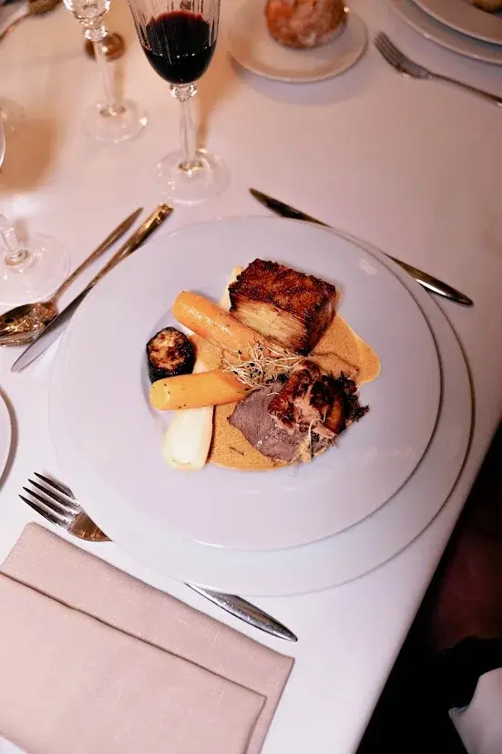

Préparer son mariage est une aventure aussi magique qu’intense. C’est une période remplie d’émotions, d’excitation, de rêves et de choix importants… mais aussi de nombreuses décisions à prendre en peu de temps. Derrière les essayages, les visites de lieux et les moments de joie partagés, se cachent parfois des imprévus qui peuvent rapidement transformer cette belle expérience en source de stress.
Entre la gestion des prestataires, le choix du lieu de réception, l’organisation du budget, ou encore les attentes (parfois envahissantes) des proches, il est très facile de commettre certaines erreurs. Et lorsqu’on organise un mariage en Nouvelle-Aquitaine, que ce soit autour de Bordeaux ou dans la région bordelaise, les options sont nombreuses… ce qui peut rendre les décisions encore plus complexes.
Pour que cette période reste un moment de bonheur, de complicité et de souvenirs précieux, il est essentiel de prendre du recul et d’anticiper les pièges les plus fréquents. Une bonne organisation permet non seulement de gagner du temps, mais aussi d’éviter les dépenses inutiles, les tensions familiales ou les choix regrettés à la dernière minute.
Découvrez donc les 9 erreurs les plus courantes à éviter lors des préparatifs, afin de vivre cette étape sereinement et de construire une journée à votre image : une célébration authentique, harmonieuse et fidèle à votre couple. Parce qu’un mariage réussi, ce n’est pas seulement une belle décoration ou un bon repas… c’est avant tout une journée où vous profitez pleinement, entourés des bonnes personnes, sans pression inutile.
1. Ne pas planifier à l’avance
Sous-estimer le temps nécessaire pour organiser un mariage est l’une des erreurs les plus fréquentes. Beaucoup de couples pensent pouvoir tout gérer en quelques semaines, mais la réalité est bien différente. Entre la recherche d’inspiration, l’élaboration d’un budget réaliste, la prise de rendez-vous et la coordination des différents prestataires, chaque étape demande du temps, de la réflexion et surtout une bonne dose d’anticipation.
Réserver le lieu de réception, le traiteur, le photographe ou encore le DJ doit souvent se faire plusieurs mois, voire un an à l’avance, surtout si vous souhaitez vous marier en haute saison. Et dans une région aussi prisée que la région bordelaise, autour de Bordeaux ou plus largement en Nouvelle-Aquitaine, les lieux de charme et les prestataires réputés sont très vite complets. Plus vous attendez, plus vous risquez de devoir faire des compromis.
Il en va de même pour la robe de mariée et le costume : entre les essayages, les retouches et les délais de fabrication, plusieurs mois peuvent être nécessaires. Ce n’est pas un détail, car ces éléments sont essentiels et doivent être choisis avec soin, sans précipitation.
Sans une planification rigoureuse et un calendrier clair, vous risquez de devoir prendre des décisions dans l’urgence. Et qui dit urgence dit souvent choix limités, tarifs plus élevés et parfois des prestations qui ne correspondent pas totalement à votre vision initiale. À l’inverse, anticiper permet de comparer tranquillement, de demander plusieurs devis, de négocier sereinement et de construire un mariage qui vous ressemble.
Une bonne organisation, dès le début, vous offre un vrai luxe : celui de vivre vos préparatifs avec moins de stress, plus de plaisir, et l’esprit léger jusqu’au grand jour.

2. Ne pas établir de budget clair
Ne pas définir un budget précis dès le début est une erreur qui peut rapidement transformer les préparatifs en véritable casse-tête. Sans cadre financier clair, les dépenses s’accumulent petit à petit… jusqu’à devenir une source de stress important, voire de tensions au sein du couple. Pourtant, établir un budget réaliste dès le départ permet de garder le contrôle et d’organiser son mariage avec beaucoup plus de sérénité.
La première étape consiste à fixer un budget global cohérent avec vos moyens. Ensuite, il est essentiel de le répartir par grands postes de dépense : lieu de réception, traiteur, décoration, papeterie, musique, tenues, photographie, transport ou encore hébergement. Cette organisation vous aide à visualiser concrètement où part votre argent et à éviter de dépasser vos limites sans vous en rendre compte.
Cette répartition vous aide aussi à rester cohérents avec vos envies : investir davantage dans ce qui compte vraiment pour vous (un bon repas, un photographe talentueux, une ambiance incroyable…) et faire des compromis sur le reste, sans culpabiliser. L’objectif n’est pas de tout avoir, mais de construire une journée qui vous ressemble.
Pensez également à anticiper les frais souvent oubliés : pourboires, frais de livraison, taxes, droits de bouchon, accessoires, retouches de tenues, éléments de dernière minute… Ce sont souvent ces petites dépenses invisibles qui finissent par déséquilibrer le budget global.
Enfin, prévoyez toujours une marge de sécurité pour les imprévus, idéalement entre 5 et 10 % du budget total. Cela vous permettra de faire face aux dépenses de dernière minute sans paniquer et sans remettre en question toute votre organisation. Un budget clair, c’est tout simplement la base pour vivre des préparatifs plus fluides, plus sereins… et beaucoup plus agréables.
Simulateur
Pour ne pas perdre le contrôle de vos finances, il est essentiel de planifier votre budget dès le départ et de suivre vos dépenses tout au long des préparatifs. Un outil de gestion de budget mariage peut vous simplifier grandement la vie : il vous permet de répartir votre budget par poste (lieu, traiteur, décoration, tenues, prestataires…), de suivre vos paiements et de prévoir une marge pour les imprévus. Vous pouvez par exemple utiliser cet outil pratique : simulateur de budget mariage. En centralisant toutes vos informations financières, vous gagnez en clarté, en sérénité et vous évitez les mauvaises surprises.
3. Vouloir tout contrôler soi-même
Beaucoup de couples pensent qu’ils doivent tout gérer seuls, soit par souci de contrôle, soit pour réduire les coûts. Pourtant, vouloir tout superviser dans les moindres détails peut vite devenir une énorme source de stress, de fatigue et même de tensions, surtout à l’approche du jour J. Organiser un mariage demande une énergie considérable : il faut prendre des dizaines de décisions, répondre à de nombreux messages, comparer des devis, faire des choix logistiques… et coordonner l’ensemble pour que tout s’enchaîne parfaitement.
L’organisation d’un mariage implique également une logistique parfois complexe : horaires des prestataires, installation de la décoration, gestion des invités, timing de la cérémonie, déroulé du repas, animations, transitions… Et si vous vous mariez dans la région bordelaise, les mariages ont souvent lieu dans des domaines ou châteaux nécessitant une organisation encore plus structurée (accès, hébergements, transport, météo, espaces extérieurs, etc.).
C’est pourquoi déléguer certaines tâches est essentiel pour préserver votre énergie et votre sérénité. Un wedding planner peut, par exemple, prendre en charge la coordination globale, le suivi des prestataires, la gestion du planning et les imprévus. Même sans wedding planner, vous pouvez aussi vous appuyer sur vos témoins ou des proches de confiance pour des missions précises : installation de la décoration, accueil des invités, gestion des cadeaux, coordination des animations, ou communication avec certains prestataires le jour même.
En réalité, déléguer ne veut pas dire perdre le contrôle : cela signifie simplement répartir les responsabilités intelligemment. En partageant les tâches, vous gagnez du temps, vous réduisez la pression et vous évitez de vivre les préparatifs comme une course permanente.
Le but est simple : que votre mariage reste un moment de plaisir, de partage et d’émotion, et non une période épuisante où vous passez plus de temps à organiser qu’à profiter. Parce qu’au final, ce jour-là, vous devez être au centre de votre bonheur… pas de la logistique.


4. Sous-estimer le temps nécessaire pour les prestataires
La coordination des prestataires demande à la fois de la patience, une vraie organisation et beaucoup de rigueur. Chaque intervenant, traiteur, photographe, fleuriste, DJ, décorateur ou officiant, possède ses propres contraintes, ses délais et ses besoins spécifiques. Penser que tout peut se régler rapidement est une erreur fréquente : en réalité, chaque détail demande du temps, des validations et parfois plusieurs échanges.
Ne pas prévoir suffisamment de temps pour les rendez-vous, les échanges de mails, les appels téléphoniques ou les ajustements de dernière minute peut entraîner des oublis, des informations mal transmises ou des incohérences dans le déroulement de la journée. Et ce genre de petits problèmes peut vite devenir une grosse source de stress à l’approche du mariage.
L’idéal est donc de mettre en place un planning clair, détaillé et partagé avec l’ensemble des prestataires concernés. Ce document doit inclure les horaires clés, les contacts importants, les lieux exacts, les temps d’installation et de démontage, ainsi que les moments forts de la journée : cérémonie, cocktail, entrée en salle, ouverture de bal, discours, arrivée du gâteau, etc.
En centralisant toutes les informations et en les communiquant en amont, vous limitez considérablement les risques de malentendus, de retards et de stress inutile. Résultat : le jour J, chacun sait exactement quoi faire, à quel moment, et vous pouvez profiter pleinement de votre mariage sans avoir à gérer la logistique en coulisses.
5. Négliger la préparation du jour J
Le jour du mariage, chaque détail compte, et la moindre approximation peut rapidement désorganiser le déroulement de la journée. Beaucoup de couples pensent que « tout se fera naturellement », mais sans préparation solide, ce moment unique peut vite se transformer en véritable course contre la montre. Entre les arrivées des prestataires, les invités à guider, les horaires à respecter et les imprévus à gérer, une organisation approximative peut générer beaucoup de stress.
Ne pas préparer un rétroplanning précis, incluant les horaires clés, les temps de transition et les responsabilités de chacun, est une erreur fréquente. Pourtant, ce planning est indispensable : il doit intégrer les temps de préparation, l’habillage, la cérémonie, le cocktail, le repas, les discours, les photos, l’ouverture de bal… mais aussi les moments « invisibles » comme les déplacements, les installations ou les petits temps de pause.
Autre élément souvent sous-estimé : le fameux kit de secours (LIEN KIT). Il peut sauver la journée en cas de petits imprévus. Pensez à prévoir quelques indispensables : épingles, nécessaire de couture, pansements, lingettes, déodorant, maquillage de retouche, médicaments de base… et bien sûr des mouchoirs (souvent très utiles, pour de bonnes raisons !).
Les plans de salle et plans de table sont tout aussi essentiels. Sans eux, l’accueil des invités peut devenir chaotique, l’installation peut prendre du retard et une simple confusion peut créer une ambiance tendue dès le début de la soirée. Un plan clair et bien affiché permet à chacun de trouver facilement sa place et évite une perte de temps inutile.
Une préparation minutieuse en amont permet d’anticiper ces situations, de réagir calmement aux aléas et surtout de déléguer efficacement. Résultat : vous vivez pleinement votre journée, l’esprit léger, en profitant de chaque instant sans avoir à penser aux détails logistiques. Parce que le jour J, votre seule mission devrait être simple : profiter.
6. Se laisser influencer par les autres
Famille, amis, collègues, réseaux sociaux… les sources de conseils sont nombreuses, et elles partent souvent d’une bonne intention. Pourtant, se laisser guider par trop d’avis extérieurs peut rapidement brouiller vos idées, créer de la confusion et rendre les décisions beaucoup plus compliquées. À force d’écouter tout le monde, vous risquez de ne plus savoir ce que vous voulez vraiment.
Le problème, c’est qu’en voulant faire plaisir à chacun, on finit souvent par multiplier les compromis : une décoration qui ne vous correspond pas, un choix de musique imposé, une liste d’invités qui s’allonge, ou encore une cérémonie qui ne reflète pas votre personnalité. Et au final, vous pouvez avoir l’impression d’organiser le mariage des autres… au lieu du vôtre.
C’est d’autant plus vrai dans une région comme la région bordelaise, où les mariages peuvent vite prendre une tournure très “traditionnelle” ou très “prestige”, simplement parce que l’environnement s’y prête. Mais ce n’est pas parce que les lieux sont magnifiques que vous devez forcément suivre un style ou un format qui ne vous ressemble pas.
Votre mariage doit avant tout refléter votre couple, votre histoire et vos valeurs, pas les tendances Pinterest ou les attentes familiales. Il est donc essentiel d’apprendre à dire non, avec calme et bienveillance. Vous n’avez pas besoin de vous justifier longuement : expliquer simplement vos choix suffit. Plus vous êtes clairs dès le début, plus les proches s’adaptent rapidement.
Écouter les conseils peut être utile, mais uniquement si cela vous aide à avancer. Faites confiance à vos envies, à votre intuition et à votre vision. C’est cette cohérence qui rendra votre mariage authentique, harmonieux et profondément marquant. Et au final, c’est justement ce qui fera de cette journée un souvenir précieux, autant pour vous que pour vos invités.
7. Oublier de profiter du processus
Dans la course aux préparatifs, il est très facile de se laisser submerger par les listes de tâches, les délais, les devis, les rendez-vous et les décisions à prendre… au point d’oublier l’essentiel : vivre pleinement cette aventure à deux. À force de vouloir tout organiser parfaitement, certains couples finissent par ne voir que la charge mentale, et non la beauté de cette période unique.
Pourtant, chaque étape compte : le choix du lieu, les essayages, les dégustations, les rencontres avec les prestataires, la sélection des alliances… tout cela fait partie intégrante de votre histoire. Ce sont des moments précieux, parfois drôles, parfois stressants, mais toujours importants, car ils construisent votre mariage bien avant le jour J.
Et si vous préparez votre mariage en Nouvelle-Aquitaine vous avez la chance de vivre des étapes vraiment agréables : visiter des domaines magnifiques, faire des dégustations dans des cadres exceptionnels, imaginer une cérémonie au milieu des vignes… Autant de souvenirs qui méritent d’être savourés au lieu d’être vécus dans la précipitation.
Prenez le temps de célébrer chaque petite victoire : une salle réservée, une robe trouvée, un prestataire validé… Ce sont des étapes importantes. Accordez-vous aussi des pauses, des moments de recul et même des petits rituels à deux : un dîner pour fêter une avancée, une soirée sans parler mariage, une balade pour souffler et se recentrer.
En ralentissant volontairement et en vous reconnectant à l’émotion et au sens de votre engagement, vous transformez les préparatifs en véritables souvenirs. Car au final, le mariage n’est pas seulement une journée… c’est tout un chemin. Et ce chemin mérite autant d’être vécu avec plaisir, complicité et joie que le jour J lui-même.


8. Ne pas prévoir de plan B
La météo capricieuse, un prestataire en retard, un petit incident technique ou tout autre imprévu… quels que soient vos efforts de planification, il y aura toujours des situations inattendues. Ne pas anticiper un plan B pour la cérémonie, la décoration ou le déroulé de la journée peut rapidement transformer de simples contretemps en véritable source de stress.
Imaginez une cérémonie en extérieur sous un ciel menaçant sans solution de repli, un timing trop serré ou un manque de matériel de secours : en quelques minutes, l’organisation peut être perturbée, et ce qui devait être un moment de bonheur devient un casse-tête. Dans des lieux typiques certains domaines et vignobles offrent des espaces extérieurs magnifiques mais exposés aux intempéries, ce qui rend la préparation d’un plan B encore plus essentielle.
Prévoir des alternatives en amont est donc indispensable. Cela peut inclure :
- un espace couvert en cas de pluie,
- un ajustement flexible du planning,
- des éléments de décoration polyvalents facilement déplacés ou modifiables,
- et une personne référente pour gérer les urgences et coordonner les prestataires si nécessaire.
Être préparé ne signifie pas vouloir tout contrôler, mais plutôt savoir s’adapter avec calme et efficacité. Cette anticipation vous permet de rester serein le jour J, de gérer les imprévus sans panique et surtout de profiter pleinement de chaque instant de votre mariage, même si tout ne se passe pas exactement comme prévu.
Un bon plan B, c’est finalement la clé pour transformer l’imprévu en simple anecdote plutôt qu’en problème.
9. Négliger la communication avec votre partenaire
Le mariage est avant tout un projet à deux, construit sur le dialogue, la confiance et la complicité. Ne pas prendre le temps de discuter de vos priorités, de vos envies, mais aussi de vos inquiétudes, peut rapidement générer des malentendus et des tensions inutiles tout au long des préparatifs. Chacun a ses propres attentes, et les non-dits risquent de s’accumuler si la communication n’est pas régulière.
Pour éviter cela, il est essentiel de mettre en place des points d’échange réguliers avec votre partenaire. Ces moments permettent de rester alignés, de partager l’avancée de l’organisation, de discuter des décisions importantes et d’ajuster vos choix si nécessaire. C’est aussi l’occasion de se soutenir mutuellement, de se rappeler pourquoi vous avez choisi de vous unir et de célébrer les étapes franchies ensemble.
En avançant main dans la main, vous transformez les préparatifs en une expérience positive, enrichissante et renforçant votre complicité, plutôt qu’en une source de stress. Au final, une bonne communication est la clé pour que le mariage ne soit pas seulement une journée parfaite, mais aussi un parcours partagé et joyeux jusqu’au grand jour.
En bref...
Préparer un mariage est une aventure merveilleuse et profondément émouvante, mais elle exige également une bonne organisation, une communication claire et une solide préparation en amont. En évitant ces 9 erreurs, vous vous donnez toutes les chances de vivre des préparatifs plus fluides, de mieux maîtriser votre budget et de réduire considérablement le stress lié à l’organisation. Vous pourrez ainsi créer une journée authentique, harmonieuse et mémorable, à l’image de votre couple et de votre histoire.
Avec un accompagnement professionnel adapté et un minimum de préparation, chaque étape devient un moment à savourer plutôt qu’une contrainte. Vous gagnez en sérénité, en clarté et en confiance, ce qui vous permet de profiter pleinement autant des préparatifs que du jour J.
Que vous organisiez votre mariage en Nouvelle-Aquitaine, autour de Bordeaux ou dans la région bordelaise, une bonne planification transforme la logistique en une expérience agréable et maîtrisée. Votre mariage se déroule alors dans les meilleures conditions, avec douceur, émotion et sans accroc, pour laisser place à l’essentiel : célébrer votre amour, entourés de ceux qui comptent vraiment.
Autres inspirations
Lovely Day Event c'est plusieurs types de prestations
L'organisation de mariage
Je vais intervenir sur toutes les étapes de vos préparatifs et vous guider dans vos choix. Je suis force de proposition pour que votre mariage ne ressemble qu’à vous.
Décoration de mariage
Créative et passionnée, je suis certifiée Wedding Designer et je conçois une ambiance scénographique qui correspond au thème de votre mariage.
Coordination le jour J
Je serai le chef d’orchestre pour gérer les différents prestataires, la mise en place de votre décoration et le déroulement de cette belle journée.